1. Набрать на клавиатуре *#* или *#*#888 для входа в заводской инженерный режим головного устройства → открыть инженерный режим FOTA → выбрать вход для сотрудника или вход для послепродажного обслуживания (требуется вход под авторизованной учетной записью сотрудника или сервисной службы)
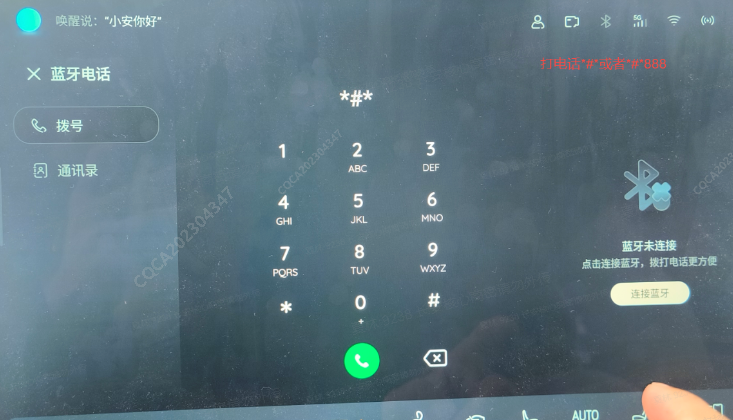
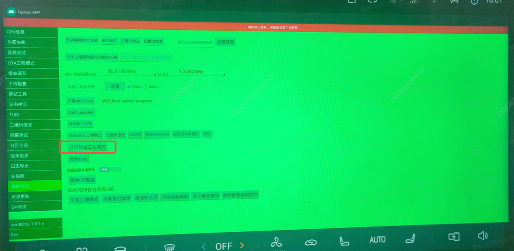
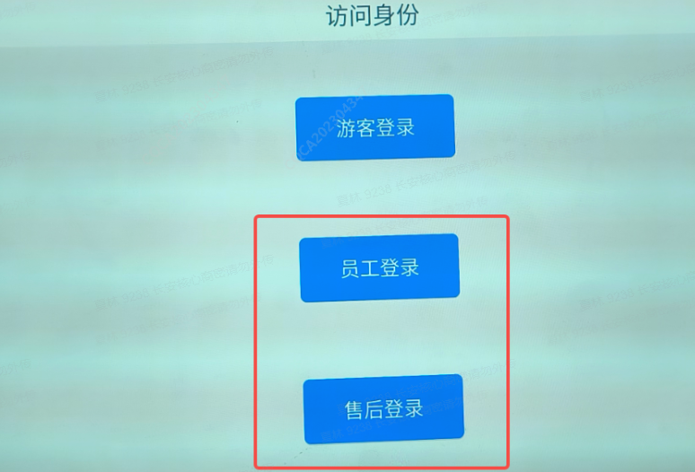
2. Нажать для перехода в «Послепродажное обслуживание» → нажать «Интеллектуальная замена деталей» → Подтвердить данные заменяемой детали (выбрать контроллер C3B, ввести аппаратный Номер детали 3609360-PT301) → Подтвердить версию ПО и нажать для запуска прошивки (после завершения прошивки выйти из режима)
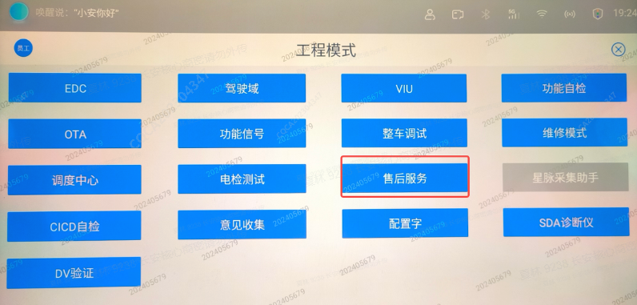
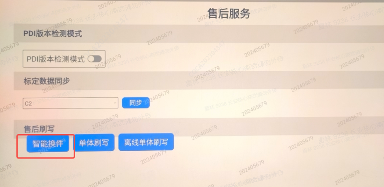
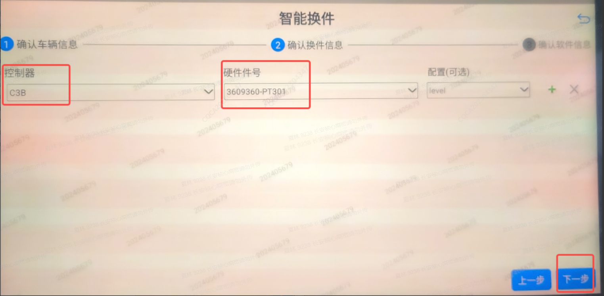
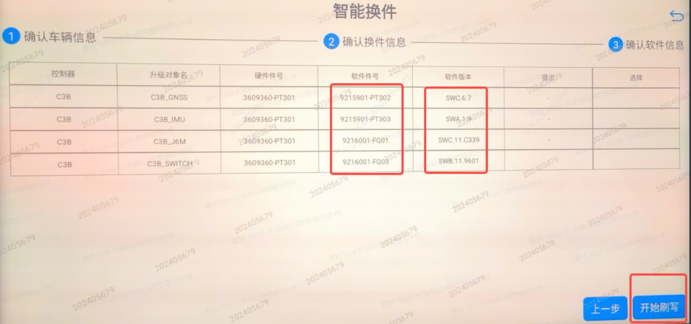
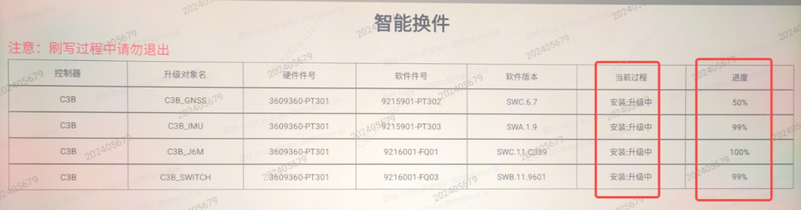
1. После подключения диагностического прибора последовательно перейти в каталог соответствующей модели автомобиля → нажать «Центральный компьютер C3B» → «Версия диагностических данных» → «Специальные функции»
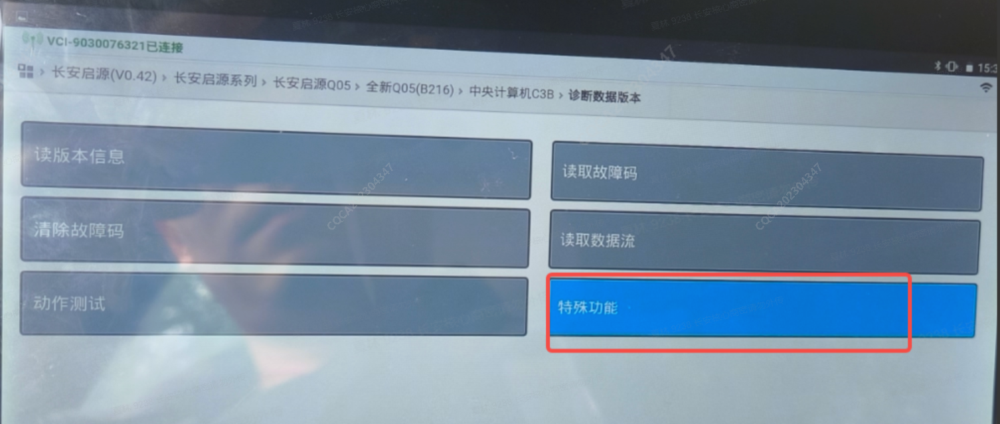
2. Нажать «Запись VIN» → ввести 17-значный код VIN автомобиля
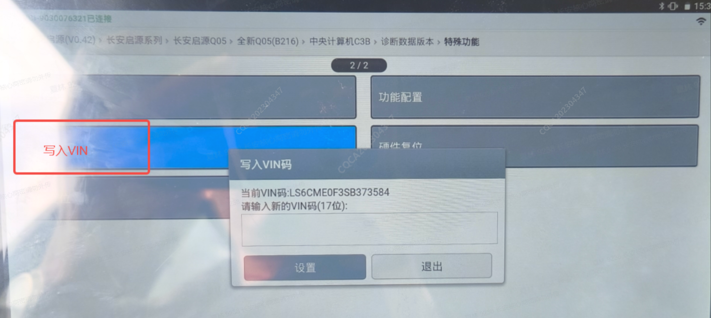
1. После подключения диагностического прибора войти в каталог соответствующей модели автомобиля → нажать «Центральный компьютер C3B» → «Версия диагностических данных» → «Специальные функции» → «Конфигурация модели автомобиля» → выбрать соответствующую конфигурацию автомобиля
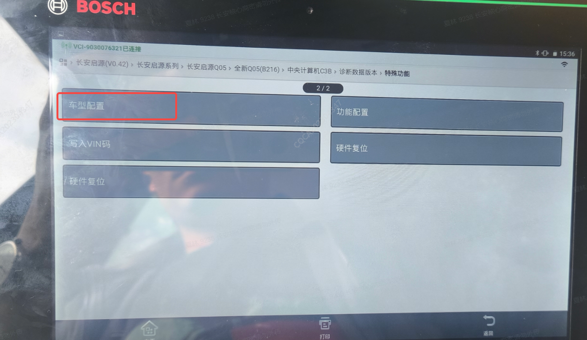
1. После завершения замены нового контроллера домена на автомобиле подключить Диагностический прибор согласно руководству по эксплуатации сервисного диагностического прибора, войти в каталог соответствующей модели и выбрать «Центральный компьютер C3B», нажать для входа.
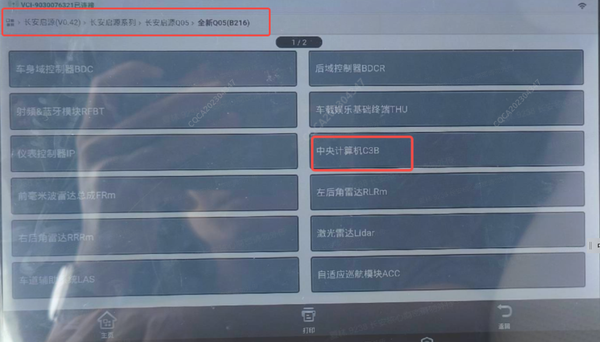
2. После входа в меню контроллера домена выбрать «Версия диагностических данных» → «Чтение потока данных» → «Чтение стандартных данных» → «Номер TUID», нажать для входа, переписать номер TUID, затем перейти в систему клиентской поддержки телематики для замены устройства;
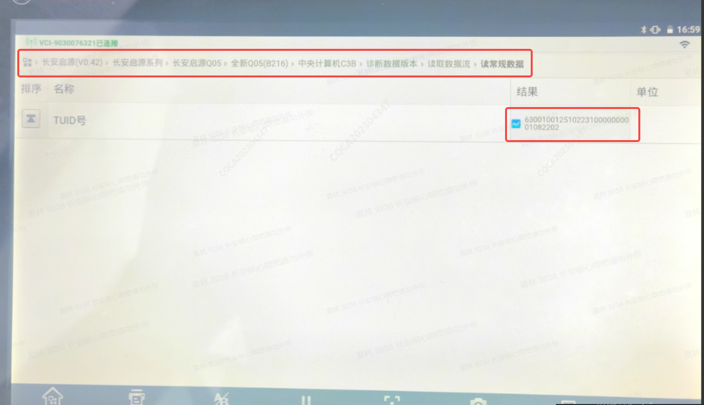
3. Выполнить вход в систему клиентской поддержки телематики, ввести кузовной номер (VIN) автомобиля с замененным контроллером домена, нажать «Поиск»;
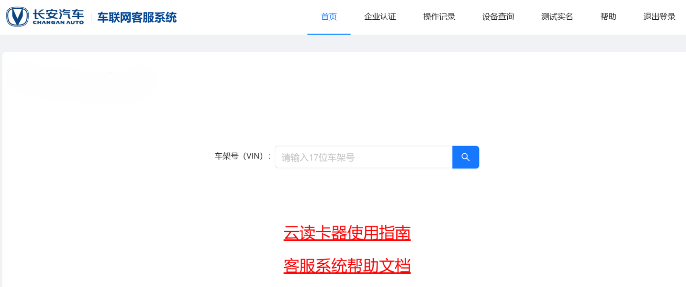
4. После перехода нажать «Замена устройства», выбрать C3B_J6M, нажать «Заменить»;
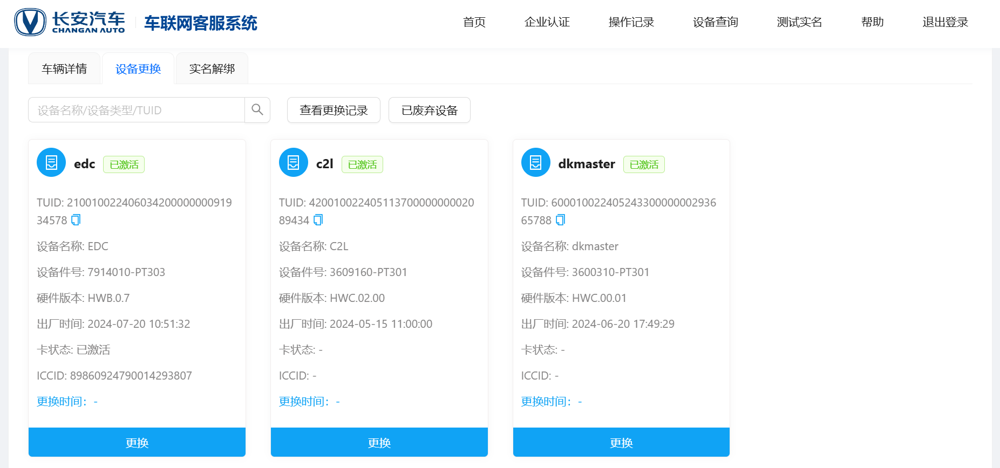
7. После перехода в поле «TUID нового устройства» ввести полный номер TUID, ранее считанный диагностическим прибором, нажать «Запрос»; в нижней строке отобразится «Состояние нового устройства: норма», нажать «Далее»;
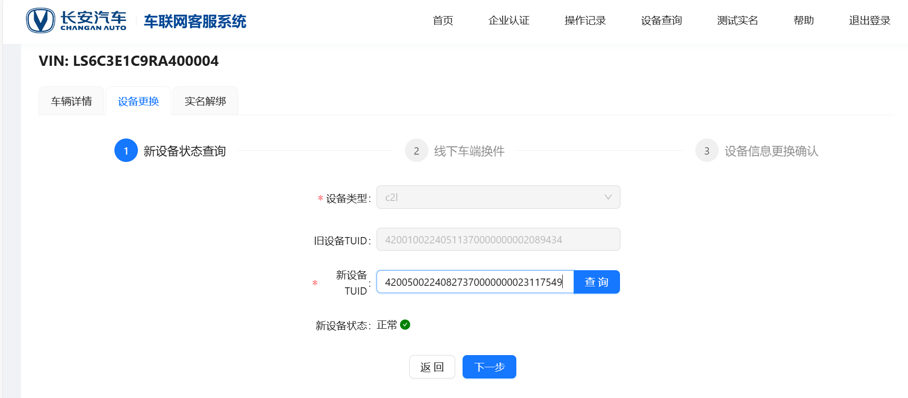
8. В соответствии с подсказками завершить установку нового контроллера домена на автомобиль, после завершения монтажа нажать «Далее»;
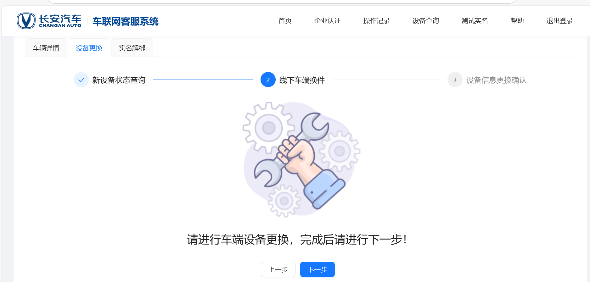
9. После перехода нажать «Получить код подтверждения», ввести полученный проверочный код и нажать «Отправить».
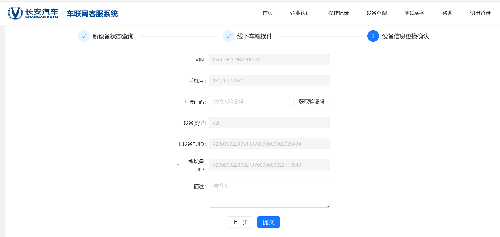
1. Выполнить вход в центральный компьютер: ssh root@192.168.2.16 пароль: CQCATech@J6M#2025, после входа в центральный компьютер ввести cd /map;
2. Открыть новое окно adb push D:\ota_demo_uart_MVT\ota_demo_uart_MVT /map; (здесь указан путь к пакету обновления на локальном компьютере; пакет обновления необходимо предварительно загрузить и сохранить локально, для загрузки пакета обновления обратиться к соответствующему специалисту сервисной службы)
3. В терминале контроллера назначить права доступа: chmod 777./ota_demo_uart_MVT/build/up.sh;
4. Запись значений плеча рычага: перейти в каталог cd./ota_demo_uart_MVT/build, ввести команду chmod 777./216.sh, ввести команду./216.sh; при успешном завершении прошивки отобразятся данные плеча рычага; если данные не отображаются корректно, ввести: tail -f /dev/ttyS1, затем printf "AGGETINSCFG" >>/dev/ttyS1
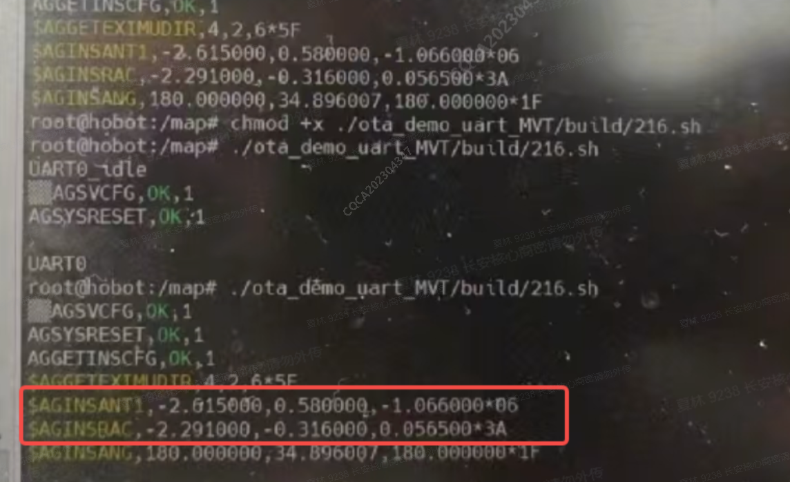
1. После замены контроллера выполнить калибровку видеокамер и лидара в соответствии с сервисным руководством по калибровке